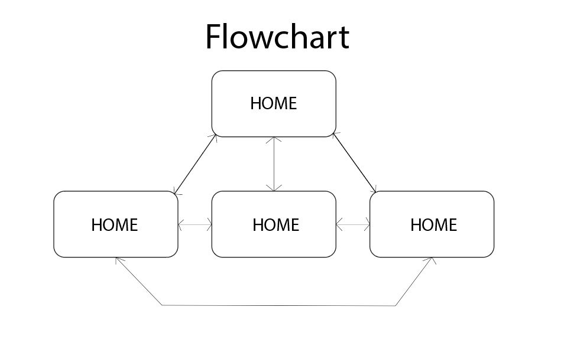

A gantt chart is a series of horzontal lines used to document the production of a project. It has the length of time, to measure how long until the project is due and to plan out what to do when. Predicted time, to estimate what to get finished and at what time to sinish it. Actual time, which is used to measure if you're within range of finishing the whole project at the right time. Lastly the tasks, which is a list of all the things you haev to do.
Storyboard/Flowchart
A storyboard is a visual representation of roughly what the outcome of a project will look like. It is used in near initial phase of a project, as it is always needed to have a rough idea of what a project is going to look like at the end. I used a storyboard as a sketch of what the format of my website may look like, shows how after the design process outside factors may influence the creation of a project.
A flowchartis a diagram the represents the sequence in which actions can be taken by people, usually involving an information system and how users are able to interact with it and how linear it is. Since this is a website and all pages can be access no matter what page you're in it creates an interlinking of all pages within the flowchart.

Management of Project
Project Logs
Project logs are the documentation of progress throughout the creation of the project. It helps people reflect for future projects, as well as acting as a way to prove or explain certain design choices during the project.